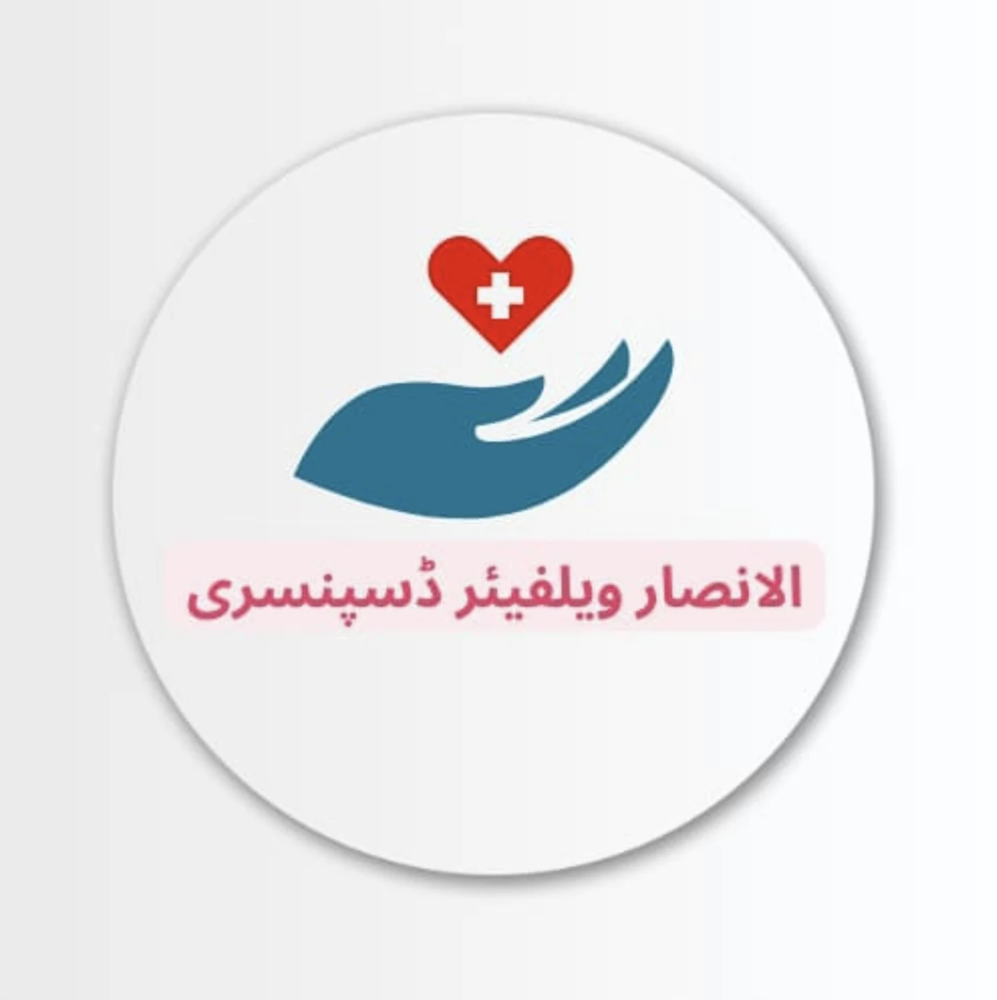
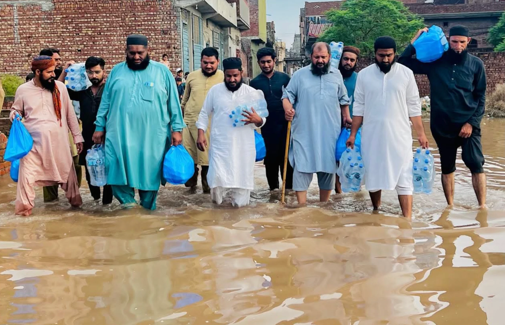
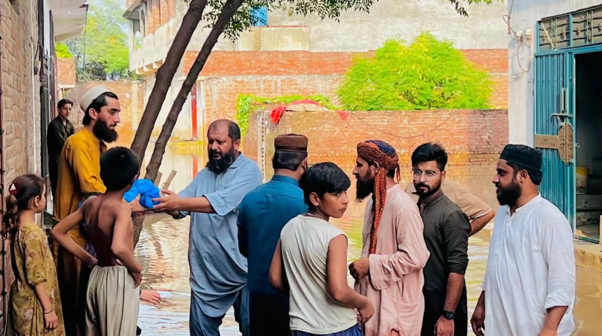
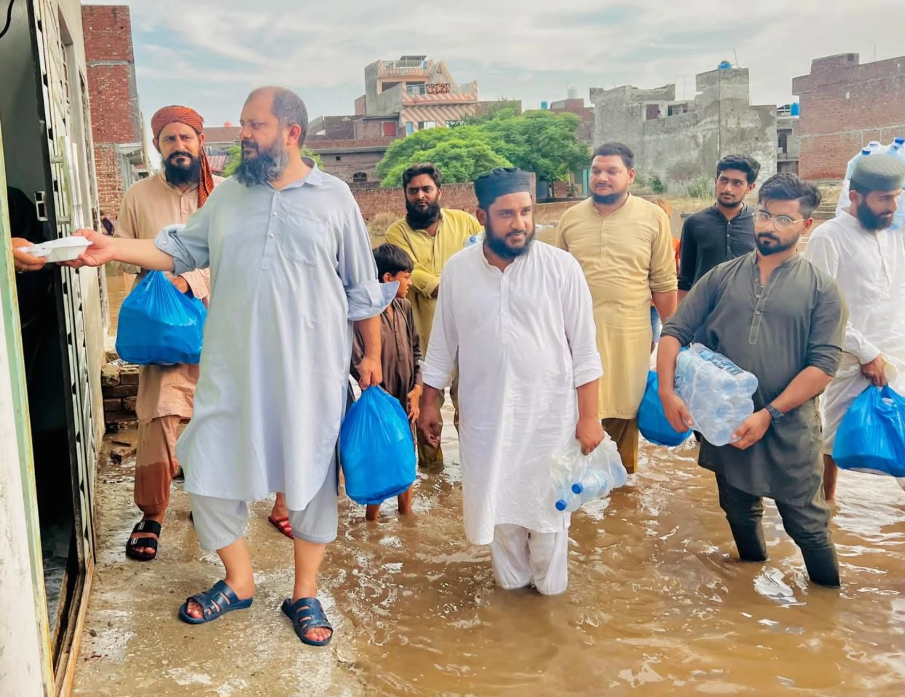
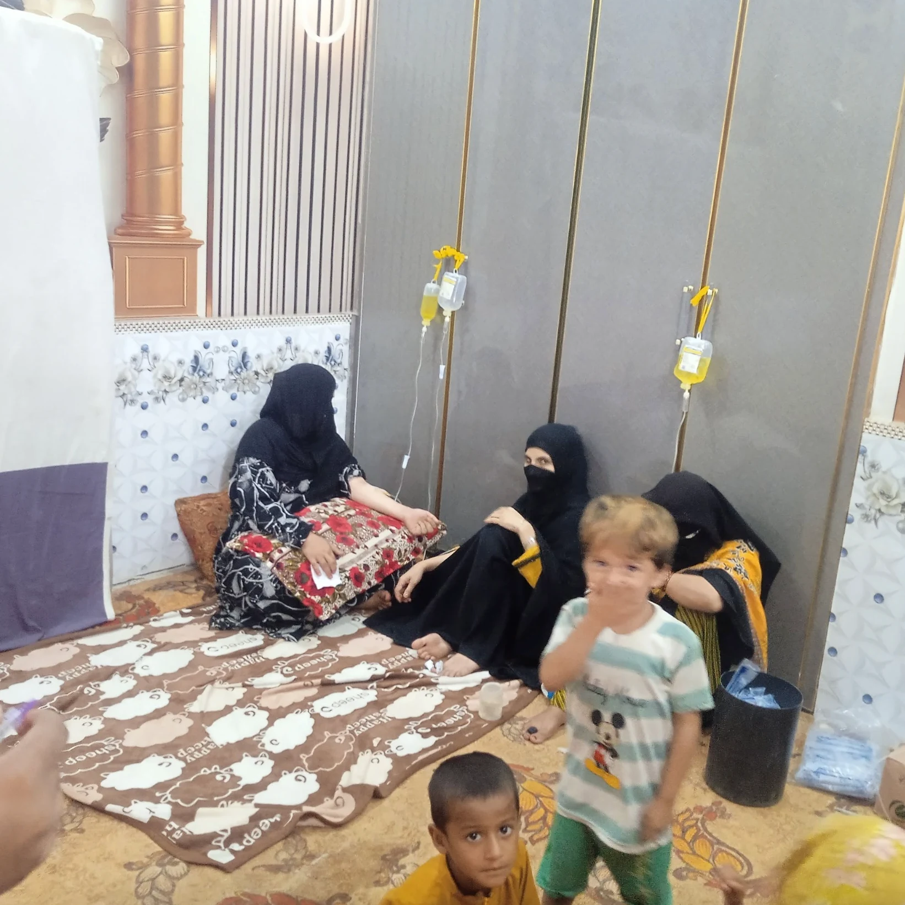
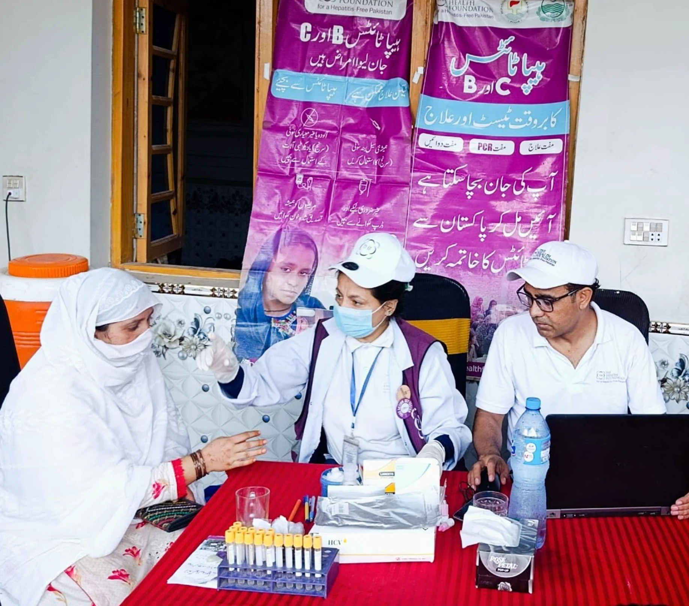
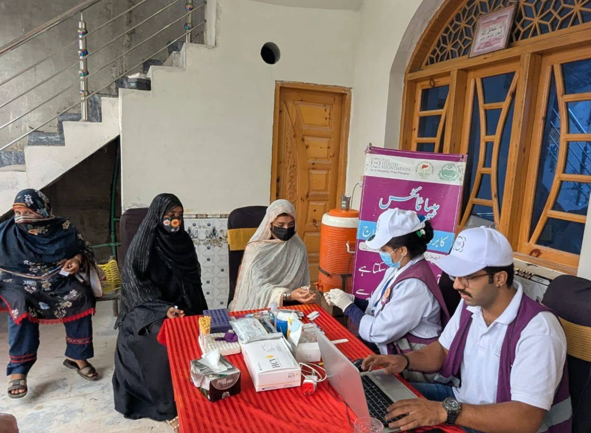
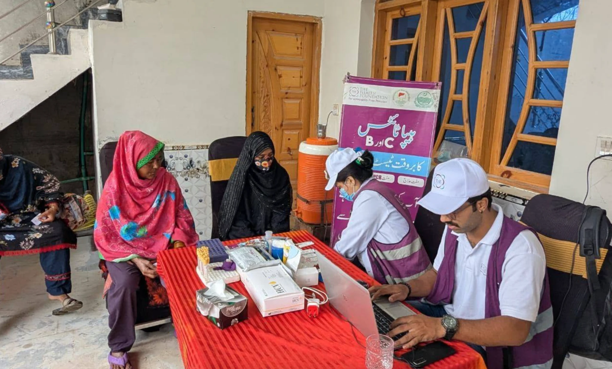
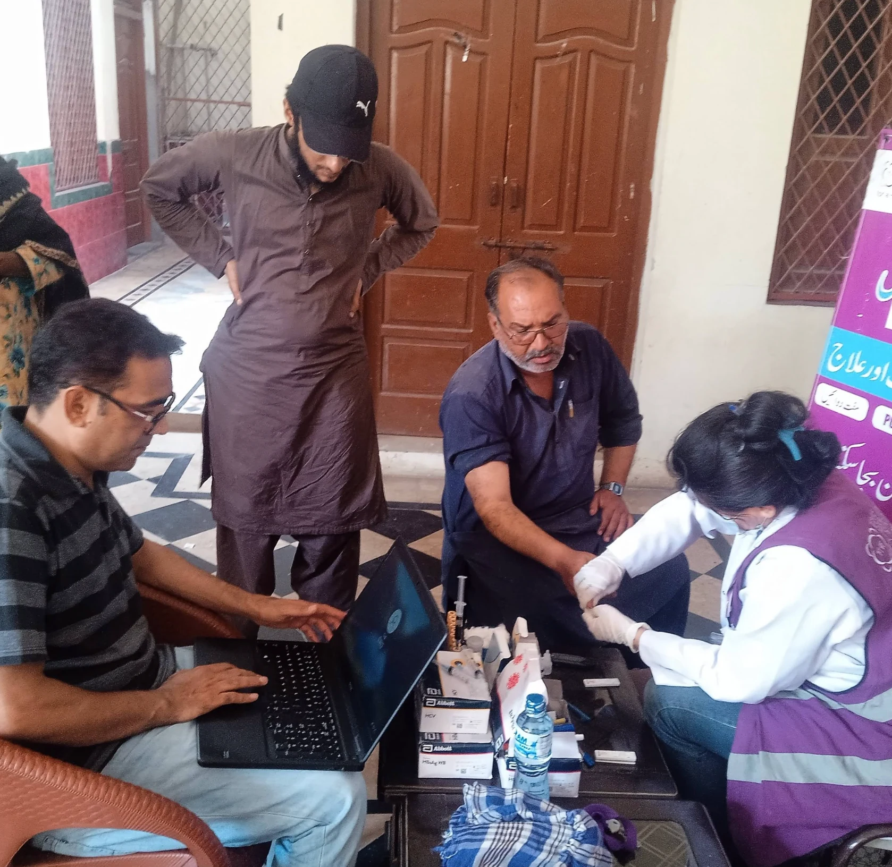
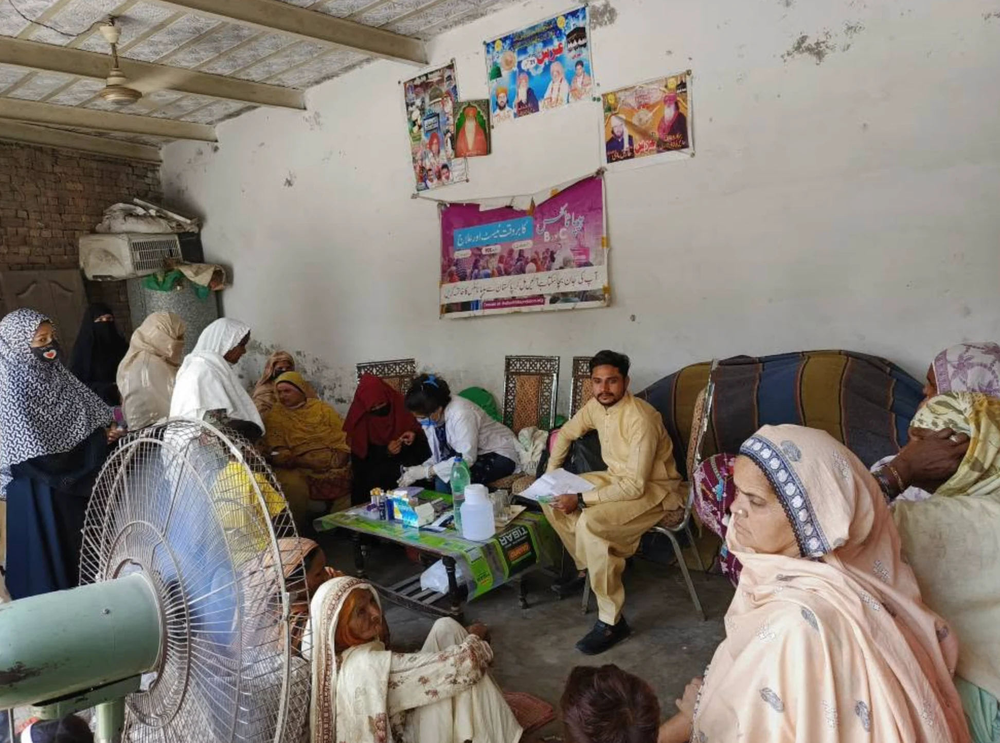

Checkups & medicines
Free medical examinations by doctors, with medicines provided to patients in need.
GENERAL HEALTH
AL ANSAARWELFARE TRUSTCOMPASSION IN ACTION
From free medical care to support in times of crisis, we stand beside people who need us most.
Rooted in our community.
United by humanity.

Standing with families.
When it matters most.
WHO WE ARE
No one should have to go without care because they cannot afford it.
Al Ansaar Welfare Trust is a nonprofit organization serving people in need in Kot Abdul Malik. Through our welfare dispensary, medical camps, and relief activities, we help make essential care and support more accessible.
ضرورت مندوں کے لیے مفت علاج اور خدمتِ انسانیت
HEALTHCARE WITH DIGNITY
Medical support for people who cannot afford treatment.
Free medical examinations by doctors, with medicines provided to patients in need.
GENERAL HEALTHFree hepatitis B and C screening, PCR testing, and treatment support under medical supervision.
SCREENING & TREATMENTFree gynecology checkups and ultrasound services through our medical camp activities.
WOMEN’S HEALTHPlease confirm the next camp schedule and availability of specific services with the dispensary team.

People helping people.BEYOND THE DISPENSARY
When floods disrupt daily life, essential supplies can make an immediate difference. Our team has distributed food and drinking water to affected families, bringing support directly to their neighborhoods.
OUR COMMUNITY, OUR PURPOSE
Moments from our medical camps and community relief work.







HELP US KEEP CARE WITHIN REACH
Help us continue providing free medical care, medicines, and essential relief to people who need them.
Your contribution can support our medical camps, treatment services, and food and drinking-water supplies for families facing difficult times. Every contribution, big or small, can help us reach more people.
“Together, we can turn compassion into care.”
آپ کا تعاون کسی ضرورت مند کے علاج اور کسی خاندان کی امید کا ذریعہ بن سکتا ہے۔ خدمتِ انسانیت کے اس سفر میں ہمارا ساتھ دیں۔
HERE FOR OUR COMMUNITY
For medical services, upcoming camp details, or ways to support our work, speak with the Al Ansaar Welfare Dispensary team in Kot Abdul Malik.
Kot Abdul Malik, Pakistan
Please confirm service availability and camp timings with the team before your visit.
الانصار ویلفیئر ڈسپنسری، کوٹ عبدالمالک